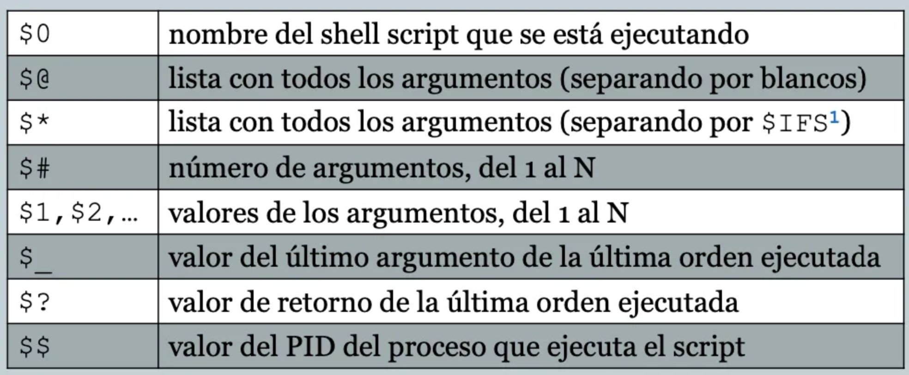
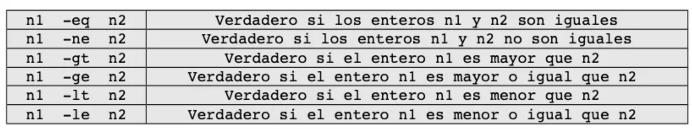
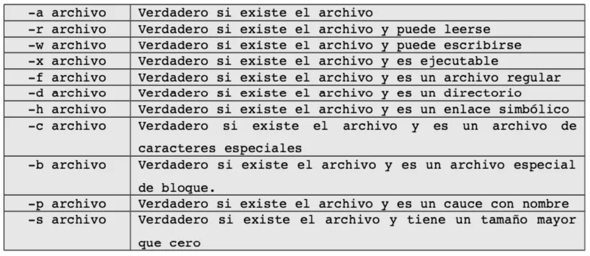
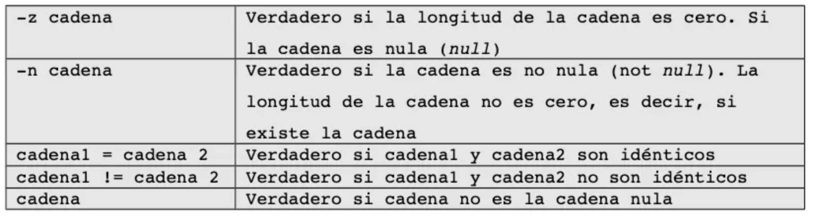
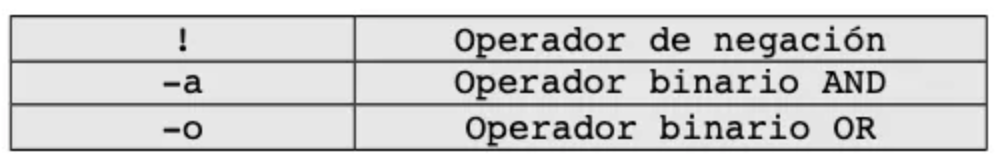
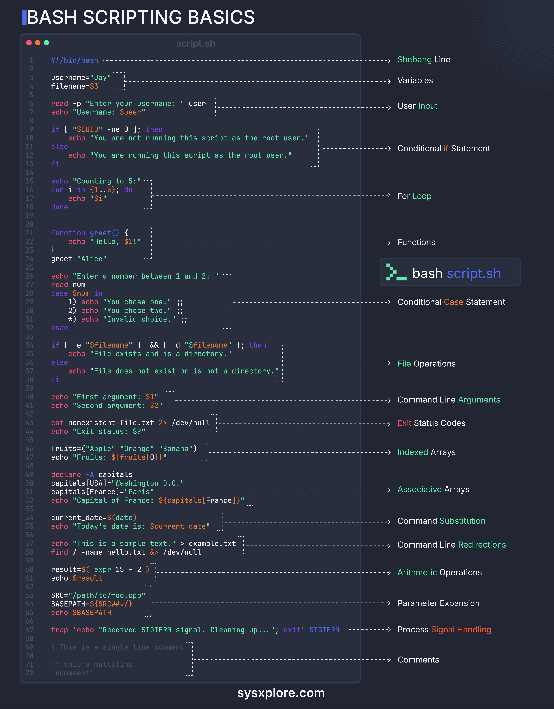

Creación de scripts en bash
Introducción
Un script es un archivo de texto que contiene una serie de comandos y/o instrucciones que se pueden ejecutar de manera secuencial para realizar una tarea específica o automatizar una serie de tareas. Estos scripts generalmente están escritos en lenguajes de scripting como Bash, Python, Perl o incluso lenguajes de programación como C o C++.
copia_seguridad.sh
#!/bin/bash
# Definir directorio de origen y destino
directorios_origen="/ruta/del/directorio/a/copiar"
directorio_destino="/ruta/del/directorio/de/destino"
# Crear un nombre de archivo con marca de tiempo
fecha=$(date +"%Y%m%d%H%M%S")
nombre_archivo_backup="backup_$fecha.tar.gz"
# Crear una copia de seguridad comprimida con tar
tar -czvf "$directorio_destino/$nombre_archivo_backup" "$directorios_origen"
# Verificar si la operación de copia de seguridad fue exitosa
if [ $? -eq 0 ]; then
echo "Copia de seguridad completada con éxito en $nombre_archivo_backup"
else
echo "Error al realizar la copia de seguridad"
fi
Para ejecutar un script, hemos de darle permisos de ejecución:
#!/bin/bash
Al iniciar un script ponemos en la primera línea #!/bin/bash, ¿Por qué?
La línea #!/bin/bash al principio de un script en Bash es conocida como "shebang" o "hashbang".
Si ejecutas un script como ./nombre-del-scrip.extension, el sistema buscará en la línea superior del archivo para determinar el intérprete, (generalmente /bin/bash) y utiliza ese programa para interpretar y ejecutar el script. Esto es especialmente útil cuando tienes varios intérpretes de comandos disponibles en tu sistema (por ejemplo, Bash, sh, zsh, etc.), y deseas asegurarte de que el script sea ejecutado con un intérprete específico.
Al ejecutar el script como bash nombre_del_script.sh, la primera línea se ignorará.
**Ejecución de un script**
$ bash script.sh # Ejecución modo 1
$ ./script.sh # Ejecución modo 2 falla no tiene permisos
zsh: permission denied: ./script.sh
$ chmod +x script.sh
$ ./script.sh # OK
Carácteres especiales
# Comentarios
Las líneas que comienzan con # (con excepción del primer #!) son comentarios y no serán interpretadas
; Separador de comandos
echo "hola"; ls
echo "HOLA"; "ADIOS"
if [ -f file.txt ]; then
echo "SI"
fi; echo "Comparación finalizada"
$ Mostrar el contenido de una variable
| pipe
Redirige la salida de un comando a la entrada del siguiente, encadena órdenes y comandos.
Otros
${ } → permite referenciar, modificar, o manipular variables
$? → Hace referencia al último comando ejecutado, si contiene un 0 la ejecución ha sido correcta, si es distinto de 0 hubo algún error en la ejecución del comando anterior.
$! → Contiene el ID del proceso del último proceso subordinado. Resulta útil cuando un shellscript necesita eliminar un proceso subordinado que ha iniciado previamente.
$_ → Devuelve el argumento final del comando previo ejecutado
$$ → Contiene el PID del proceso
\ → (escape) Hace que el shell interprete el carácter de forma literal
\n → Nueva línea
\t → Tabulador
> &> >& >> < → Redirección
name="Mundo"
echo "Hola ${name}!" -> pa
echo "${text:0:3}" -> extracción texto
echo "${var:-ValorPorDefecto}"
#!/bin/bash
name="Usuario"
directory="/home/${name}/documentos"
echo "Hola ${name}, tu directorio es: ${directory}"
echo "Longitud del nombre: ${#name}"
echo "Tu nombre en minúsculas: ${name,,}" # "usuario"
echo "Primeras 3 letras de tu nombre: ${name:0:3}"
#!/bin/bash
touch ejemplo.txt
echo "Archivo creado: $_"
echo "Hola Bash" >> $_
echo "Contenido agregado a: $_"
cat $_
Variables y argumentos
Variables
Se crean mediante una asignación sin espacios.
El shell es “case sensitive”, sensible a mayúsculas y minúsculas (a y A son distintas)
Se accede a su valor anteponiendo $
Variables y comillas
Comillas simples, los carácteres especiales no se interpretan.
Comillas dobles, permiten la interpretación de carácteres especiales como “$” (permiten mostrar el valor de una variable”
Comillas inversas: permiten asignar el resultado de una ejecución de una orden (subshell), igual que con $( )
Variables predefinidas
Crea y ejecuta el siguiente script (variables_predefinidas.sh)
Ejercicio
Parámetros - argumentos
Al ejecutar un script podemos acceder a cada uno de los argumentos de la llamada del mismo

Ejercicio
Copia y ejecuta el siguiente script argumentos.sh
#!/bin/bash
echo '$_' $_
echo '$0' $0
echo '$1' $1
echo '$2' $2
echo '$3' $3
echo '$*' $*
echo '$@' $@
echo '$#' $#
echo '$_' $_
echo '$$' $$
echo '$?' $?
Ejecuta el script utilizando diferentes argumentos:
./argumentos.sh hola
./argumentos.sh hola adios
./argumentos.sh hola 123 asdf
Condicionales
Permiten decidir entre una o varias opciones según una condición lógica.
if [ 1 = 1]; then # Se suele poner el ; así el then no queda en la línea de abajo
echo "Son iguales"
fi
##########################################
if [ 2 = 1]; then
echo "Son iguales"
else
echo "Son distintos"
fi
Hay varias formas de especificar la condición lógica
Instrucción de test básica [] → Instrucciones simples
Instrucción de test extendida [[]] → Permite combinar varias expresiones, previene la separación de palabras y la expansión de comodines
Operadores condicionales
Enteros

Ficheros

Cadenas

Podemos utilizar < y > dentro del constructor [[./4.BashScripting]]
Operadores lógicos

Dentro del constructor [[]] se pueden utilizar && y ||
Condicional múltiple case
Copia y ejecuta el siguiente script:
echo "Estás seguro (s/n)? [n]"
read resp
case ${resp} in
[sS]) echo "En fin, tú lo has querido..." ;;
n|N) echo "Estupendo, menos trabajo!";;
*) echo "Voy a considerar eso como un no!";;
esac
Ejercicios
1. Crea un script al que se le pasen 2 argumentos (números, no validar) y nos diga cuál es el mayor.
2. Modifica el script para en vez de pasar 2 argumentos nos los pida. (comando read)
3. Crea un script al que se le pase un argumento que sea un nombre de fichero y compruebe si existe.
4. Crea un script al que se le pase un argumento que sea un nombre de directorio y compruebe si existe.
5. Crea un script al que se le pasen 2 argumentos, un fichero y un directorio y compruebe si existen (utilizando operadores lógicos). Respuestas: Los 2 existen, Los 2 no existen.
6. Modifica el script que hemos utilizado en el punto 3.3 para que también acepte como respuesta “si” “SI” “no” “NO” y otras variaciones
Bucles
Iteran mientras o hasta que se cumple una condición.
La instrucción de test o expresión lógica se expresa de la misma manera que con las condiciones, por lo que podemos hacer test de "si existe un archivo y es ejecutable" o "si el archivo existe y es un enlace simbólico" por ejemplo.
While - until
while [ expresión ]; do
echo "Comandos a ejecutar"
done
until [ expresión ]; do
echo "Comandos a ejecutar"
done
Tipo for
Opción 1, iterar sobre una lista
Ejercicios
1. Crea un script que nos pida 10 números y los sume.
2. Crea un script que imprima y sume 50 números aleatorios.
3. Crea un script que nos muestre los números pares del 1 al 100.
Utilidades de los bucles
Gracias a que los bucles pueden recorrer listas, podemos ejecutarlos para recorrer la salida de otros comandos:
## Recorrer los ficheros y directorios de la carpeta actual
for i in $(ls); do
echo $i
done
----------------------
## Recorrer los parámetros que se le pasan.
for i in "$@"; do
if ! [ -d ./$i ]; then
echo "Directorio \"$i\" no existe en este lugar"
exit 2
fi
done
Ejercicios
1. Crea un script que verifique si hay **directorios** en la carpeta actual desde donde se ejecuta el script (no hay que considerar a punto y punto punto como directorio).
2. Crea un script que muestre el nombre de usuario de todos los usuarios del sistema que tengan una shell válida. (hay que comprobar que la shell existe)
Si un usuario tiene como shel (/bin/xxxx) no lo mostrará.
Funciones
#!/bin/bash
# funcion-error arg1 arg2 (imprime el mayor entre 2 valores)
function error () {
msg=$1 # Pase de parámetros (posicional) echo $msg
exit 1
}
if [ ! $1 ] || [ ! $2 ] then
error "Error! Uso correcto: mayor arg1 arg2"
fi
if [ $1 -gt $2 ]; then echo $1; else echo $2
fi
#!/bin/bash
# funcion-mayor arg1 arg2 (imprime el mayor entre 2 valores)
function mayor () {
x=$1; y=$2 # Pase de parámetros (posicional)
if [ $x -gt $y ]; then
echo $x
else
echo $y
fi
return 0 # Retorno de la orden, no valor de salida
}
resultado=$(mayor $1 $2) # Se invoca como una orden para recuperar el valor de retorno
echo $resultado
Otros
Obtener valores pipeline desde script
https://stackoverflow.com/questions/19408649/pipe-input-into-a-script/46726373#46726373
Podemos recoger lo que nos llega de una tubería (PIPE) en un script bash:
#!/bin/bash
# Check to see if a pipe exists on stdin.
# Filename testPipe.sh
if [ -p /dev/stdin ]; then
echo "Data was piped to this script!"
# If we want to read the input line by line
while IFS= read line; do
echo "Line: ${line}"
done
# Or if we want to simply grab all the data, we can simply use cat instead
# cat
else
echo "No input was found on stdin, skipping!"
# Checking to ensure a filename was specified and that it exists
if [ -f "$1" ]; then
echo "Filename specified: ${1}"
echo "Doing things now.."
else
echo "No input given!"
fi
fi
Comandos avanzados
grep
Ya no se utiliza egrep
Busca palabras o patrones en el contenido de uno o varios ficheros y vuelca por su salida las líneas que contienen dichas palabras o patrones.
grep [-inHv] patrón [ficheros(s)]
-i ignora la diferencia entre mayúsculas y minúsculas
-n imprime la línea del fichero
-H imprime el nombre del fichero
-v búsqueda inversa (líneas que no contienen el patrón)
**tldr**
- Search for a pattern within a file:
grep "search_pattern" path/to/file
- Search for an exact string (disables regular expressions):
grep --fixed-strings "exact_string" path/to/file
- Search for a pattern in all files recursively in a directory, showing line numbers of matches, ignoring binary files:
grep --recursive --line-number --binary-files=without-match "search_pattern" path/to/directory
- Use extended regular expressions (supports `?`, `+`, `{}`, `()` and `|`), in case-insensitive mode:
grep --extended-regexp --ignore-case "search_pattern" path/to/file
- Print 3 lines of context around, before, or after each match:
grep --context|before-context|after-context=3 "search_pattern" path/to/file
- Print file name and line number for each match with color output:
grep --with-filename --line-number --color=always "search_pattern" path/to/file
- Search for lines matching a pattern, printing only the matched text:
grep --only-matching "search_pattern" path/to/file
- Search `stdin` for lines that do not match a pattern:
cat path/to/file | grep --invert-match "search_pattern"
Ejemplos:
- Busca la palabra “nombre” en los ficheros con extensión txt:
$ grep -Hn nombre *.txt
- Busca las líneas que comienzan por “a” o “c” mayúsculas o minúsculas:
$ grep -iHn ^[ac] *.txt
- Busca líneas que terminan por una coma:
$ grep -Hn ,$ *.txt
- Busca líneas que no contienen un punto:
$ grep -Hnv '\.' *.txt
El carácter “.” tiene un significado especial para el shell y para grep. Las comillas simples evitan la interpretación por el shell, y la “\” por grep.
find
Permite explorar el sistema de archivos
- Habitualmente se utiliza para localizar aquellos ficheros o directorios que cumplen con una condición.
- Adicionalmente, pueden ejecutar acciones sobre ellos.
Es útil en combinación con bucles for o while.
**tldr**
- Find files by extension:
find root_path -name '*.txt'
- Find files matching multiple path/name patterns:
find root_path -path '**/path/**/*.ext' -or -name '*pattern*'
- Find directories matching a given name, in case-insensitive mode:
find root_path -type d -iname '*lib*'
- Find files matching a given pattern, excluding specific paths:
find root_path -name '*.py' -not -path '*/site-packages/*'
- Find files matching a given size range, limiting the recursive depth to "1":
find root_path -maxdepth 1 -size +500k -size -10M
- Run a command for each file (use `{}` within the command to access the filename):
find root_path -name '*.txt' -exec wc -l {} \;
- Find files modified in the last 7 days:
find root_path -daystart -mtime -7
- Find empty (0 byte) files and delete them:
find root_path -type f -empty -delete
Ejemplos:
find . -type f -print
find . -name \*.txt -exec basename {} \;
------- OTROS -------
find . -empty -type d
find . -empty -type f
find . -size +10M
* c: bytes, k:Kb, M:Mb, G:Gb
find . -type f -mmin -5
find . -perm 777
find . -maxdepth 1 -type f
https://ciberninjas.com/15-ejemplos-del-comando-find-en-linux/
Ejecuta el siguente script find-bucles.sh
#!/bin/bash
# find-bucles.sh, 3 versiones alternativas
dir=$HOME
echo "Versión 1 ----------------------------"
find $dir -name \*.txt -exec grep -inH nombre {} \;
echo "Versión 2 ----------------------------"
find $dir -name \*.txt -print | while read f do
grep -inH nombre $f
done
echo "Versión 3 ----------------------------"
oldifs=$IFS
IFS=$'\n'
for f in $(find $dir -name \*.txt -maxdepth 1 -print) do
grep -inH nombre $f
done
IFS=$oldifs
Contesta a las siguientes preguntas:
Ejercicios
Creación de ficheros y directorios para hacer las prácticas, ejecuta cada uno de los siguientes comandos para preparar el entorno para los ejercicios:
mkdir ~/find_grep
cd ~/find_grep
wget https://gist.githubusercontent.com/jsdario/6d6c69398cb0c73111e49f1218960f79/raw/8d4fc4548d437e2a7203a5aeeace5477f598827d/el_quijote.txt
mv el_quijote.txt ..
mkdir dir{uno,2,tres,4,5}
ls
split -n 50 -d ../el_quijote.txt quijote
for f in ./quijote??; do mv $f diruno/"$f.txt"; done
split -n 20 -d ../el_quijote.txt el_qui
for f in ./el_qui??; do mv $f dir2/"$f.doc"; done
wget https://gutenberg.org/cache/epub/84/pg84.txt -O ../Frankenstein.txt
split -n 60 -d ../Frankenstein.txt Frankenstein.libro.completo.
for f in Frankenstein.libro.completo.??; do mv $f dirtres/"$f.txt.avi"; done
## Dir 4
Corta el libro de Frankenstein en fragmentos de 1000 líneas, muévelos a la carpeta
dir4,
el nombre de archivo será: "The_modern_Prometheus" seguido de la numeración
que pone split
Cambia o pon la extensión .docx
touch sin_contenido.txt
dd if=/dev/urandom of=fich20mb bs=1M count=20
EJERCICIOS find - grep
#### FIND
1. Busca el archivo Frankenstein.libro.completo.31.txt.avi
2. Buscar el archivo QUIJOTE14.txt sin importar si está escrito en mayúsculas o minúsculas
3. Busca todos los archivos que terminen en .doc o en .txt
4. Busca directorios vacíos
5. Busca si existe algún fichero vacío
6. Busca si existe algún fichero de más de 10 Mb
7. Ejecuta el comando `touch archivo.txt`
Busca los archivos que se han modificado en los últimos 5 minutos
8. Ejecuta el comando `chmod 777 dirtres/Frankenstein.libro.completo.18.txt.avi`
Busca algún archivo con permisos 777
9. Busca los archivos del directorio actual
10. Ejecuta:
mkdir dir6
cd dir6
touch archivo{0..100}
ls
Añade la extensión .txt a todos estos archivos
#### GREP
#### FIND + GREP
Resumen
